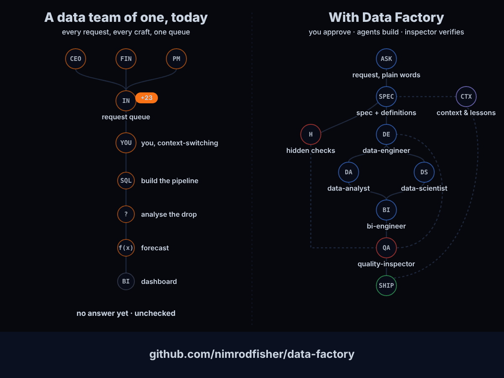
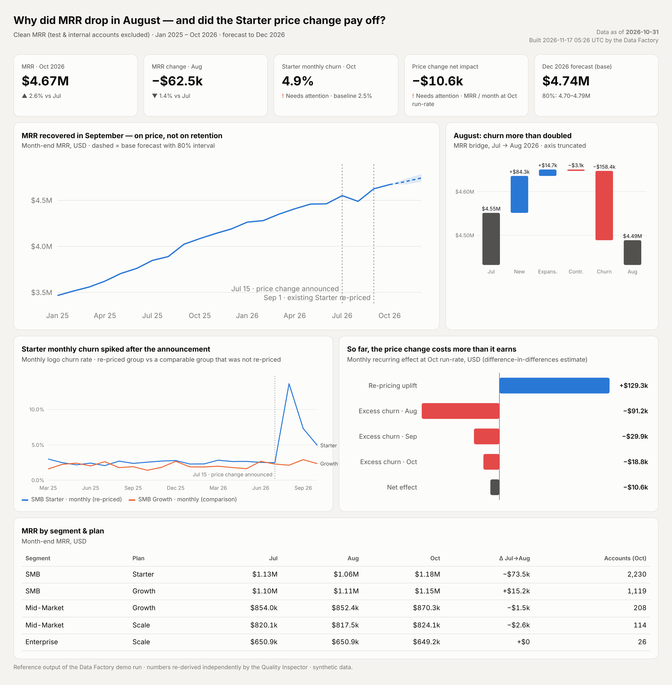

Data Factory: the open-source AI data team
Your data team is one person. Data Factory gives them a whole team.
AI agents for data engineering, analytics, data science and BI — and a quality inspector that checks every number. You just approve.

What is Data Factory?
Data Factory is an open-source AI data team for Claude Code. It brings the software factory model (also called an agentic or "dark" factory) to data work: specialised AI agents build, an independent inspector agent verifies, and a human sets intent and approves. The result: one data person can run a full data team, and every number that reaches a stakeholder has been checked against hidden tests and real finance figures.
Meet the AI data team
AI data engineer
Ingestion, dbt / SQLMesh models, incremental loads, tests and pipelines.
AI data analyst
"Why did this number change?" investigations with sized drivers and reproducible queries.
AI data scientist
Forecasts, A/B test readouts, causal impact estimates and ML models with baselines.
AI BI engineer
Dashboards and semantic layers in Looker, Power BI, Tableau, Metabase and more.
Quality inspector
Hidden checks, reconciliation to finance, independent re-derivation. PASS, REWORK or BLOCK.
How it works, in plain words
- You ask in plain English:
/data-factory:run Why did MRR drop in August? - It writes a spec that defines every word ("revenue", "active", "last month") → you approve it.
- Four AI specialists build the tables, the analysis, the forecast and the dashboard.
- The inspector checks every number against hidden tests and your finance figures; mistakes go back for rework.
- You get the answer and the proof, and you decide what ships. Nothing touches production without you.
It catches what people miss
In the demo run, every visible check passed on the first build. The inspector's hidden checks still caught 1,132 duplicated invoices (revenue overstated by 46%) and 3 internal test accounts that made a revenue drop look 76% bigger. After one rework loop, every number matched finance to the dollar.

What lean data teams use it for
Metric investigations
Real or noise? What drove it? Sized drivers, alternatives ruled out.
Weekly KPI review
Runs on a schedule and opens a pull request every Monday.
Dashboard requests
A brief, governed metrics, and every KPI reconciled to the warehouse.
New data sources
Profiled, staged, tested and scheduled, all delivered as a PR.
A/B test readouts
SRM check, effect with confidence interval, ship / don't ship.
Board forecasts
Scenarios with intervals, backtested against naive baselines.
Try it in 5 minutes
git clone https://github.com/nimrodfisher/data-factory && cd data-factory/demo pip install duckdb pandas numpy && python generate_data.py claude /plugin install data-factory --marketplace nimrodfisher/data-factory /data-factory:run MRR dropped in August. Why?
Works with your data stack
Warehouses: Snowflake · BigQuery · Databricks · Redshift · Postgres · DuckDB / MotherDuck
Transform: dbt · SQLMesh · plain SQL · Orchestration: Airflow · Dagster · Prefect · dbt Cloud · GitHub Actions
BI: Looker · Power BI · Tableau · Metabase · Superset · Lightdash · Hex · Streamlit
FAQ
What is an AI data factory?
A way of running data work like a software factory: specialised AI agents build, an independent agent verifies, and humans only set intent and approve.
Is this related to Azure Data Factory?
No. Azure Data Factory is Microsoft's data-integration (ETL) service. Data Factory is an open-source AI agent team for data work that runs on top of the tools you already use.
Can AI agents replace a data team?
They can do most of the building. Intent, definitions and accountability stay with a human data lead, and Data Factory makes the agents prove their numbers.
Will it touch production?
No. Agents build in dev, a safety hook blocks destructive SQL and production targets, and everything ships as a pull request a human merges.